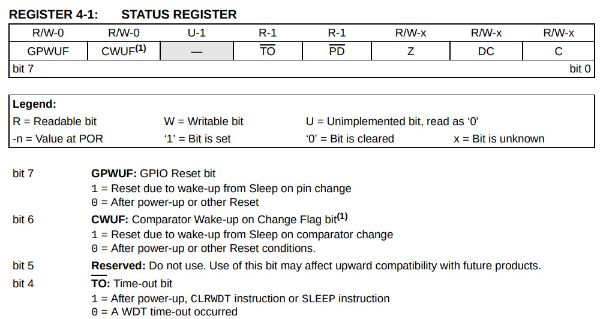
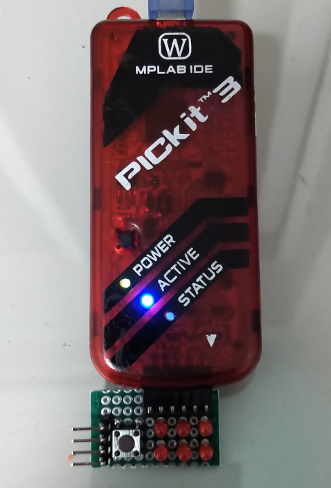
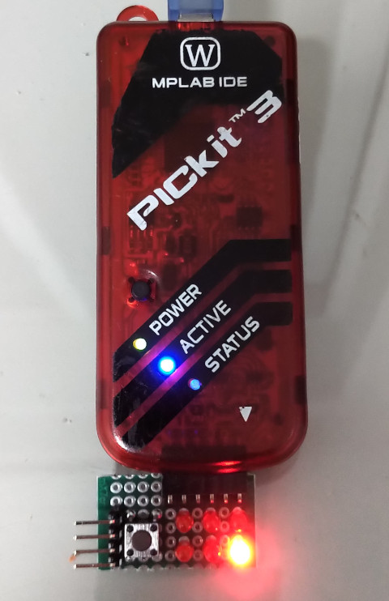

PIC10F200 >> Assembly
Watchdog
PIC10F200的Watchdog觸發時，會直接Reset PIC10F200，不過比較神奇的是GPIO設定值還是之前那份，因此，為了可以達到閃爍LED，在程式一開始就判斷是否從Watchdog Reset回復

Prescaler

main.s
list p=10f200, r=hex #include <p10f200.inc> __config _CONFIG, _IntRC_OSC & _WDTE_ON & _MCLRE_OFF org 0x00 start: movlw b'11001111' option movlw b'00001100' tris GPIO bcf GPIO, 1 movlw 0x01 btfss STATUS, 4 xorwf GPIO, f sleep end
編譯
$ gpasm main.s
完成

